Part 8: Electrostatics
1. Electric Field Force
$$ \vec{F} = \frac{1}{4\pi\varepsilon_0} \frac{q_1 q_2}{r^2} \hat{r} $$
2. Electric Field Strength
$$ \vec{E} = \frac{\vec{F}}{q_0} $$
$$ \begin{cases} \vec{E} = \frac{1}{4\pi\varepsilon_0} \sum \frac{q_i}{r_i^2} \hat{r}_i \quad (\text{for discrete charge systems}) \\ \vec{E} = \int d\vec{E} \quad (\text{for continuous charged bodies}) \end{cases} $$
In Electrostatic Fields:
- Gauss's Law (高斯定理): $\Phi_e = \oint \vec{E} \cdot d\vec{S} = \frac{q}{\varepsilon_0} \quad (q \text{ is the net charge enclosed by the Gaussian surface})$
- Circuital Law (环路定理): $\oint \vec{E} \cdot d\vec{l} = 0$
① Electric field distribution of a point charge:
$$ E = \frac{1}{4\pi\varepsilon_0} \frac{Q}{r^2} $$
② Electric field distribution of a uniformly charged solid sphere (Charge volume density is equal everywhere, charges cannot move freely):
$$ \begin{cases} \text{When } r < R, \quad E \cdot 4\pi r^2 = \frac{1}{\varepsilon_0} \frac{r^3}{R^3} Q \\ \quad \therefore E = \frac{Q r}{4\pi\varepsilon_0 R^3} \\ \text{When } r \ge R, \quad E \cdot 4\pi r^2 = \frac{1}{\varepsilon_0} Q \\ \quad \therefore E = \frac{Q}{4\pi\varepsilon_0 r^2} \end{cases} $$
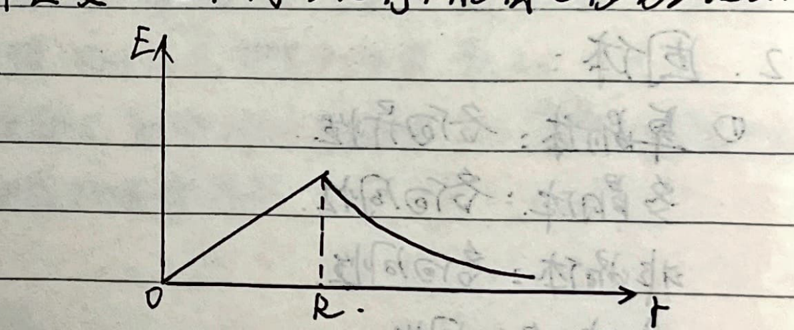
③ Electric field distribution of a hollow spherical shell (Thin conducting spherical shell or solid conducting sphere, charges distribute on the outer surface due to electrostatic equilibrium, charges can move freely):
$$ \begin{cases} \text{When } r < R, \quad E \cdot 4\pi r^2 = 0 \\ \quad \therefore E = 0 \\ \text{When } r \ge R, \quad E \cdot 4\pi r^2 = \frac{1}{\varepsilon_0} Q \\ \quad \therefore E = \frac{Q}{4\pi\varepsilon_0 r^2} \end{cases} $$
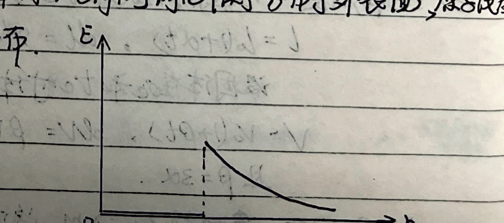
④ Electric field distribution of an infinitely long conducting wire (Charge linear density $\lambda$):
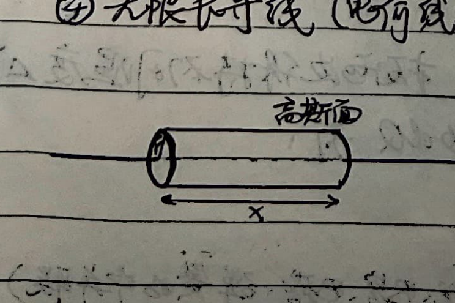
$$ E \cdot 2\pi r \cdot x = \frac{1}{\varepsilon_0} \lambda \cdot x $$
$$ \therefore E = \frac{\lambda}{2\pi\varepsilon_0 r} $$
⑤ Electric field distribution of an infinitely wide flat plate (Charge surface density $\sigma$):
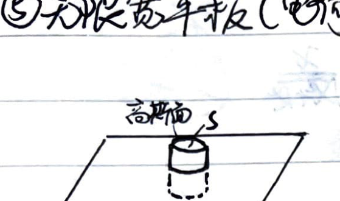
$$ 2E \cdot S = \frac{1}{\varepsilon_0} S \cdot \sigma $$
$$ \therefore E = \frac{\sigma}{2\varepsilon_0} $$
⑥ Surface of a conductor in electrostatic equilibrium:
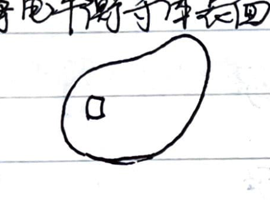
$$ E \cdot \Delta S = \frac{1}{\varepsilon_0} \Delta S \cdot \sigma $$
$$ \therefore E = \frac{\sigma}{\varepsilon_0} $$
⑦ Electric Dipole (电偶极子): (Dipole moment $\vec{p} = q\vec{l}$, where $\vec{l}$ points from $-q$ to $+q$).
1) On the perpendicular bisector (中垂线):
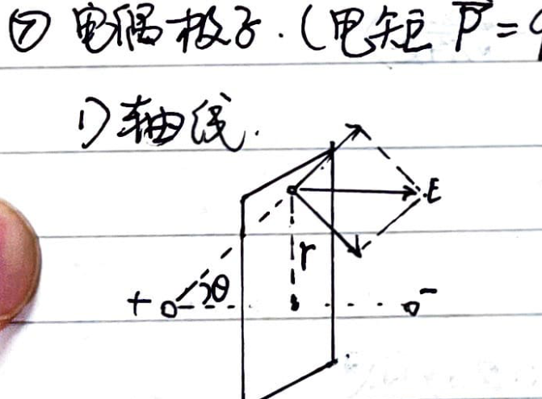
$$ E = 2E^+ \cos\theta = 2 \frac{kq}{r^2 + (\frac{l}{2})^2} \frac{\frac{l}{2}}{\sqrt{r^2 + (\frac{l}{2})^2}} = \frac{kql}{\left(r^2 + \frac{l^2}{4}\right)^{\frac{3}{2}}} $$
When $r \gg l$, we have $r_{\pm} \approx r$.
$$ \therefore E \approx \frac{kql}{r^3} = \frac{kp}{r^3} $$
2) On the line connecting the charges (连线):
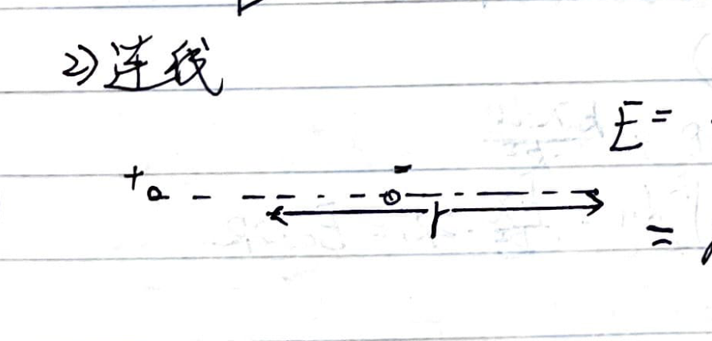
$$ E = \frac{kq}{(r - \frac{l}{2})^2} - \frac{kq}{(r + \frac{l}{2})^2} = kq \frac{r^2 + rl + \frac{l^2}{4} - r^2 + rl - \frac{l^2}{4}}{\left[r^2 - (\frac{l}{2})^2\right]^2} \approx kq \cdot \frac{2rl}{r^4} = \frac{2kql}{r^3} $$
$$ \therefore E \approx \frac{2kp}{r^3} $$
3) Arbitrary point (任意点):
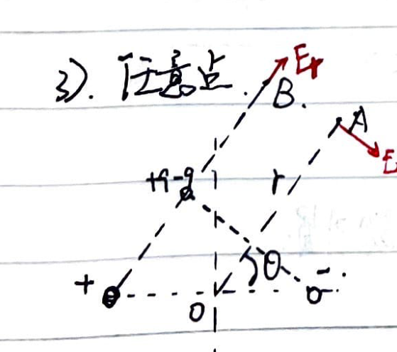
With OA as the polar axis, from $-q$ construct symmetric charge $+q$, and at the same point add $-q$. This decomposes it into two dipoles.
$$ \therefore E_\theta \approx \frac{k q l \sin\theta}{r^3}, \quad E_r \approx \frac{2kq l \cos\theta}{r^3} $$
$$ \therefore E = \sqrt{E_\theta^2 + E_r^2} = \frac{k q l}{r^3} \sqrt{\sin^2\theta + 4\cos^2\theta} = \frac{kp}{r^3} \sqrt{1 + 3\cos^2\theta} $$
⑧ Electric field in the overlapping region of overlapping solid spheres (Volume density $\rho$ and $-\rho$):
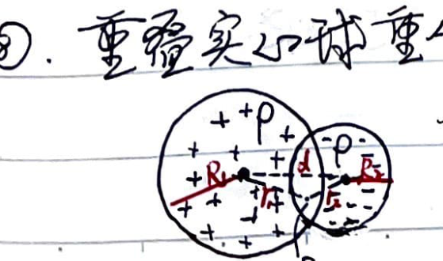
In the overlapping region, for the positive and negative charges at $+P$ and $-P$, we have:
$$ \vec{E}_P = \frac{k \frac{4}{3}\pi r_1^3 \rho}{r_1^3} \vec{r}_1 - \frac{k \frac{4}{3}\pi r_2^3 \rho}{r_2^3} \vec{r}_2 = k \frac{4}{3}\pi \rho (\vec{r}_1 - \vec{r}_2) = \frac{\rho \vec{d}}{3\varepsilon_0} $$
⑨ Electric field distribution on the axis of a charged ring:
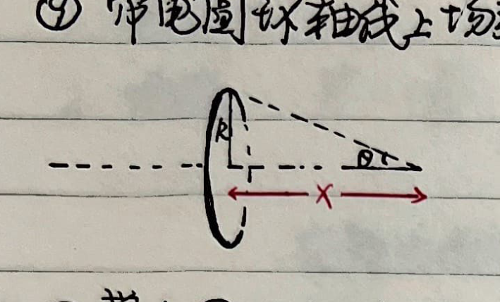
$$ E = \int \frac{k dq}{x^2 + R^2} \cos\theta = \frac{kq}{x^2 + R^2} \frac{x}{\sqrt{x^2 + R^2}} = \frac{qx}{4\pi\varepsilon_0(x^2 + R^2)^{\frac{3}{2}}} $$
⑩ Electric field distribution on the axis of a charged disk:
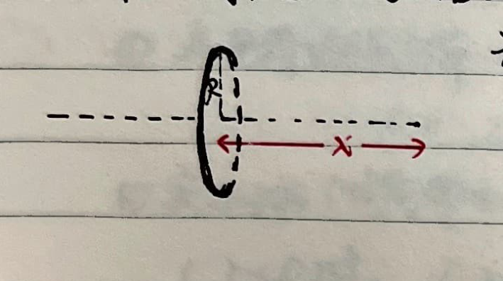
Using the above result:
$$ E = \int_0^R \frac{(2\pi r dr \sigma) x}{4\pi\varepsilon_0 (x^2 + r^2)^{\frac{3}{2}}} = \frac{\sigma x}{2\varepsilon_0} \int_0^R \frac{r dr}{(x^2 + r^2)^{\frac{3}{2}}} $$
$$ = \frac{\sigma x}{4\varepsilon_0} \int \frac{d(x^2 + r^2)}{(x^2 + r^2)^{\frac{3}{2}}} = \frac{\sigma}{2\varepsilon_0} \left(1 - \frac{x}{\sqrt{x^2 + R^2}}\right) $$
Special Topic: Equivalent Methods for Finding Electric Field Strength
1. Generalizing from the electric field at the center of a uniformly charged semi-circle to an arc with subtended angle $\varphi$:
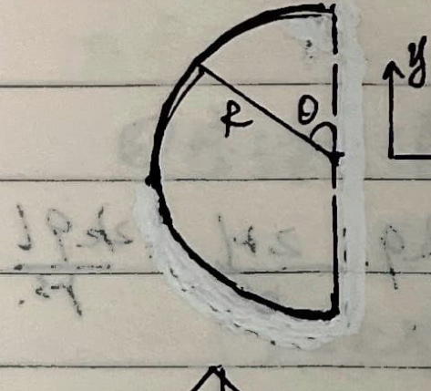
$$ \begin{cases} dE_y = 0 \quad (\text{by symmetry}) \\ dE_x = \frac{k(\lambda R d\theta)}{R^2} \cos\theta = \frac{k\lambda dy}{R^2} \end{cases} $$
$$ \therefore E = \int dE_x = \frac{k\lambda}{R^2} \int_{-R}^{R} dy = \frac{k\lambda}{R^2} \cdot 2R = E_0 \cdot 2R $$
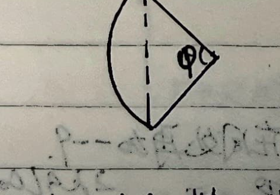
For an arc with subtended angle $\varphi$:
$$ E = \frac{k\lambda}{R^2} \int dy = \frac{k\lambda}{R^2} \cdot \left(2R \sin\frac{\varphi}{2}\right) $$
2. Generalizing from the electric field at the center of a uniformly charged hemispherical shell to a spherical cap with subtended angle $\varphi$:
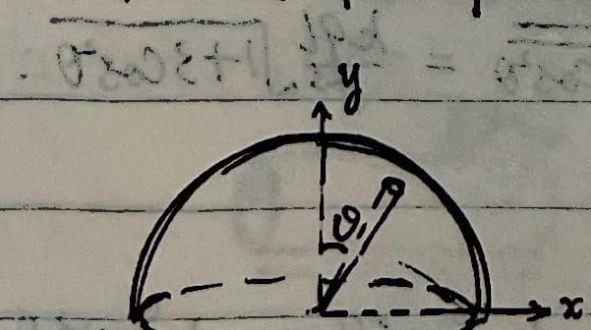
$$ \begin{cases} dE_x = 0 \quad (\text{by symmetry}) \\ dE_y = \frac{k \cdot \sigma dS \cos\theta}{R^2} = \frac{k\sigma dS_x}{R^2} \end{cases} $$
$$ \therefore E = \int dE_y = \frac{k\sigma}{R^2} \int dS_x = \frac{k\sigma}{R^2} \cdot \pi R^2 = E_0 \cdot \pi R^2 $$
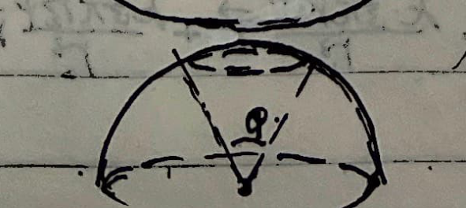
For a spherical cap with subtended angle $\varphi$:
$$ E = \frac{k\sigma}{R^2} \int dS_x = \frac{k\sigma}{R^2} \cdot \pi \left(R\sin\frac{\varphi}{2}\right)^2 $$
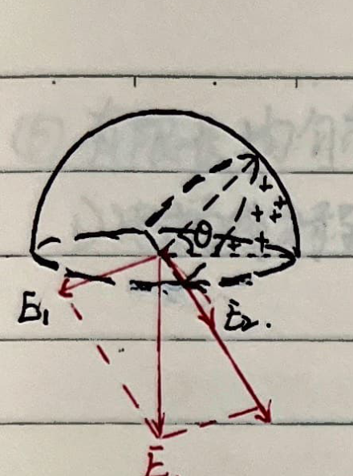
Alternatively (using $\theta$ for the subtended angle):
$$ \begin{cases} E_1 \cos\frac{\theta}{2} = E_2 \cos\frac{\pi-\theta}{2} \\ E_1 \sin\frac{\theta}{2} + E_2 \sin\frac{\pi-\theta}{2} = E_0 \cdot \pi R^2 \end{cases} $$
Solving yields:
$$ E = (E_0 \cdot \pi R^2) \sin^2\frac{\theta}{2} = \frac{k\sigma}{R^2}(\pi R^2) \sin^2\frac{\theta}{2} $$
3. Generalizing from the electric field at distance R from an infinitely long uniformly charged line to a finite line:
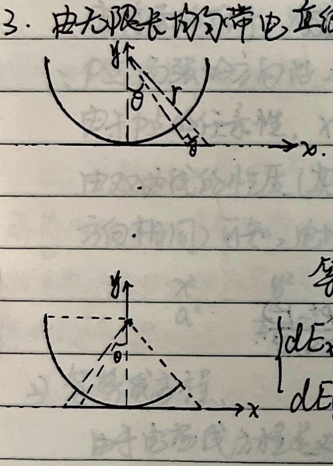
$$ \begin{cases} dE_x = 0 \quad (\text{by symmetry}) \\ dE_y = \frac{k\lambda dl}{r^2} \cos\theta = \frac{k\lambda (\frac{R}{\cos^2\theta} d\theta)}{(\frac{R}{\cos\theta})^2} \cos\theta = \frac{k\lambda}{R} \cos\theta d\theta \end{cases} $$
This evaluates to $\frac{k(\lambda R d\theta)}{R^2} \cos\theta$, which is equivalent to the electric field at the center of a semi-circle:
$$ \begin{cases} dE_x = \frac{k\lambda dl}{r^2} \sin\theta = \frac{k(\lambda R d\theta)}{R^2} \sin\theta \\ dE_y = \frac{k\lambda dl}{r^2} \cos\theta = \frac{k(\lambda R d\theta)}{R^2} \cos\theta \end{cases} $$
4. Generalizing from the electric field at distance R from an infinitely wide uniformly charged plate to a finite plate:
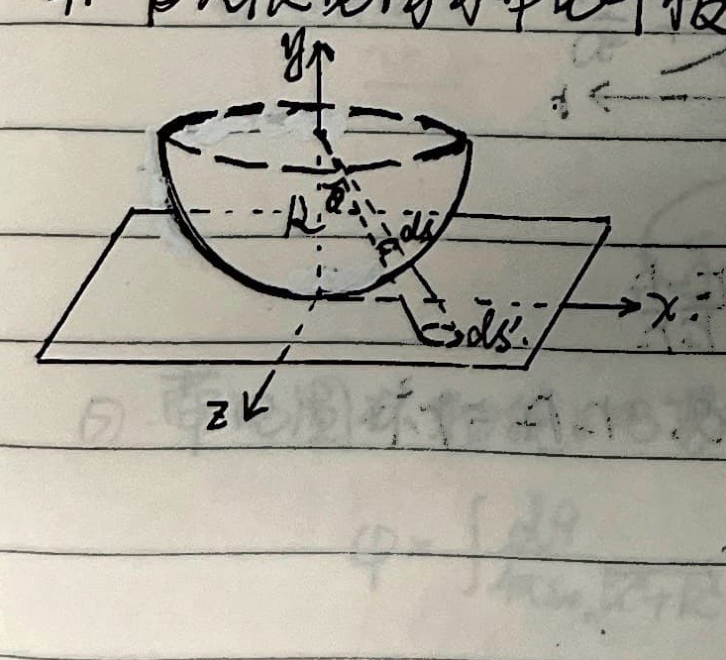
$$ \begin{cases} dE_x = dE_z = 0 \quad (\text{by symmetry}) \\ dE_y = \frac{k \sigma dS' \cos\theta}{r^2} \end{cases} $$
$$ \because \frac{dS' \cos\theta}{(R/\cos\theta)^2} = \frac{dS}{R^2} \implies dS' = \frac{dS}{\cos^3\theta} $$
$$ \therefore dE_y = \frac{k\sigma \frac{dS}{\cos^3\theta}}{(R/\cos\theta)^2} \cos\theta = \frac{k\sigma dS}{R^2} \quad (\text{Similar to the line segment projection}) $$
$$ \therefore E = \int dE_y = \frac{k\sigma}{R^2} \cdot 2\pi R^2 = 2\pi k \sigma = \frac{\sigma}{2\varepsilon_0} $$
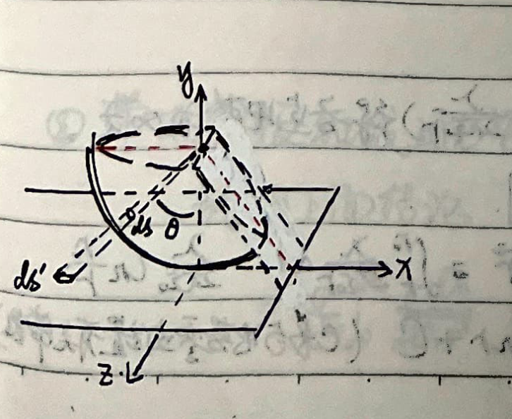
$$ \begin{cases} dE_x = \frac{k\sigma dS'}{r^2} \sin\theta \cos\alpha = \frac{k\sigma dS}{R^2} \tan\theta \cos\alpha \\ dE_y = \frac{k\sigma dS'}{r^2} \cos\theta = \frac{k\sigma dS}{R^2} \\ dE_z = 0 \end{cases} $$
3. Electric Potential
$$ \varphi_A = \int_A^\infty \vec{E} \cdot d\vec{l} $$
$$ \begin{cases} \varphi_A = \frac{1}{4\pi\varepsilon_0} \sum \frac{q_i}{r_i} \quad (\text{discrete}) \\ \varphi_A = \frac{1}{4\pi\varepsilon_0} \int \frac{dq}{r} \quad (\text{continuous}) \end{cases} $$
When infinity is non-conducting, potential at infinity is zero. If not considering the charge of the Earth, Earth is regarded as potential zero.
① Electric potential distribution of a point charge:
$$ \varphi_a = \frac{q}{4\pi\varepsilon_0} \int_a^\infty \frac{dr}{r^2} = \frac{q}{4\pi\varepsilon_0} \left(-\frac{1}{r}\right)_a^\infty = \frac{q}{4\pi\varepsilon_0 a} $$
$$ U_{ab} = \varphi_a - \varphi_b = \frac{q}{4\pi\varepsilon_0}\left(\frac{1}{a} - \frac{1}{b}\right) $$
② Solid sphere:
$$ \begin{cases} r \ge R, \quad \varphi = \int_r^\infty E dr = \frac{q}{4\pi\varepsilon_0 r} \\ r < R, \quad \varphi = \frac{q}{4\pi\varepsilon_0 R} + \int_r^R \frac{q \cdot r dr}{4\pi\varepsilon_0 R^3} = \frac{q}{4\pi\varepsilon_0 R} + \frac{q(R^2 - r^2)}{8\pi\varepsilon_0 R^3} = \frac{q(3R^2 - r^2)}{8\pi\varepsilon_0 R^3} \end{cases} $$
③ Hollow spherical shell:
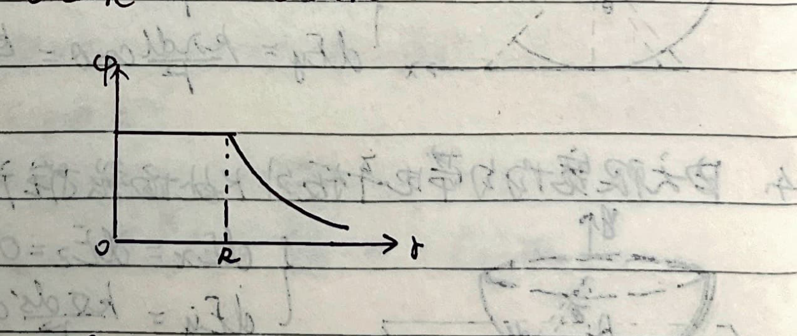
$$ \begin{cases} r \ge R, \quad \varphi = \frac{q}{4\pi\varepsilon_0 r} \\ r < R, \quad \varphi = \frac{q}{4\pi\varepsilon_0 R} \end{cases} $$
④ Electric Dipole:
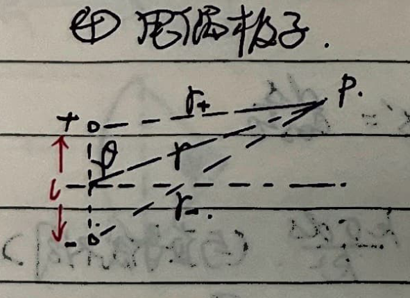
$$ \varphi = \frac{q}{4\pi\varepsilon_0 r_+} - \frac{q}{4\pi\varepsilon_0 r_-} = \frac{q}{4\pi\varepsilon_0} \frac{r_- - r_+}{r_- r_+} $$
When $r \gg l$, we have $r_- - r_+ \approx l \cos\theta$, $r_- r_+ \approx r^2$.
$$ \therefore \varphi \approx \frac{q}{4\pi\varepsilon_0} \frac{l \cos\theta}{r^2} = \frac{\vec{p} \cdot \vec{r}}{4\pi\varepsilon_0 r^3} $$
⑤ Electric potential distribution of infinitely long uniformly charged line:
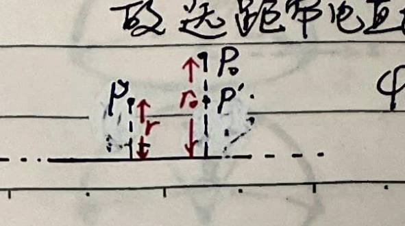
If we still choose infinity as the zero potential point, then from $\int_r^\infty E dr$ ($E = \frac{\lambda}{2\pi\varepsilon_0 r}$) we get the potential at each point is infinity. So we choose a point $P_0$ at distance $r_0$ from the charged line as the zero potential point. As shown in the figure:
$$ \varphi_P = \int_P^{P_0} \vec{E} \cdot d\vec{r} = \int_r^{r_0} \frac{\lambda}{2\pi\varepsilon_0 r} dr = \frac{\lambda}{2\pi\varepsilon_0} \ln\frac{r_0}{r} $$
$$ = -\frac{\lambda}{2\pi\varepsilon_0} \ln r + \frac{\lambda}{2\pi\varepsilon_0} \ln r_0 = -\frac{\lambda}{2\pi\varepsilon_0} \ln r + C \quad (C \text{ is a constant related to the zero potential point}) $$